# Importing packages
library(data.table)
library(lubridate)
library(ggplot2)
library(DT)
library(patchwork)
library(xgboost)
library(tidymodels)
library(SHAPforxgboost)15 Non-parametric individual claim reserving in insurance
This article was written by Nigel Carpenter and originally published on 13 November 2020.
15.1 Introduction
In this chapter, we provide code to replicate the central scenario in Maximilien Baudry’s paper “NON-PARAMETRIC INDIVIDUAL CLAIM RESERVING IN INSURANCE. Before running the code, we recommend that you read the original paper first.
15.2 Simulating the data
Below we step through the process to create a single simulated dataset. Having stepped through the data creation process, we present the code in the form of a function that returns a simulated policy and claim dataset at the end for later use.
The second notebook details the process for creating a reserving database and the third outlines the process for creating reserves using machine learning.
Before we start we import a few pre-requisite R packages.
15.2.1 Create Policy Data set
Start by simulating number of policies sold by day and by policy coverage type.
Policy count by date
# set a seed to control reproducibility
set.seed(123)
# polices sold between start 2016 to end 2017
dt_policydates <- data.table(date_UW = seq(as.Date("2016/1/1"), as.Date("2017/12/31"), "day"))
# number of policies per day follows Poisson process with mean 700 (approx 255,500 pols per annum)
dt_policydates[, ':='(policycount = rpois(.N,700),
date_lapse = date_UW %m+% years(1),
expodays = as.integer(date_UW %m+% years(1) - date_UW),
pol_prefix = year(date_UW)*10000 + month(date_UW)*100 + mday(date_UW))]Policy covers by by date
Add policy coverage columns in proportions:
- 25% Breakage
- 45% Breakage and Oxidation
- 30% Breakage, Oxidation and Theft.
# Add columns defining Policy Covers
dt_policydates[, Cover_B := round(policycount * 0.25)]
dt_policydates[, Cover_BO := round(policycount * 0.45)]
dt_policydates[, Cover_BOT := policycount - Cover_B - Cover_BO]
datatable(head(dt_policydates))Policy transaction file
Next create a policy transaction file 1 row per policy, with columns to indicate policy coverage details.
Policy date & number
First step is to create policy table with 1 row per policy and underwriting date.
# repeat rows for each policy by UW-Date
dt_policy <- dt_policydates[rep(1:.N, policycount),c("date_UW", "pol_prefix"), with = FALSE][,pol_seq:=1:.N, by=pol_prefix]
# Create a unique policy number
dt_policy[, pol_number := as.character(pol_prefix * 10000 + pol_seq)]
head(dt_policy) |> datatable()Policy coverage type
Can now add the coverage appropriate to each row.
# set join keys
setkey(dt_policy,'date_UW')
setkey(dt_policydates,'date_UW')
# remove pol_prefix before join
dt_policydates[, pol_prefix := NULL]
# join cover from summary file (dt_policydates)
dt_policy <- dt_policy[dt_policydates]
# now create Cover field for each policy row
dt_policy[,Cover := 'BO']
dt_policy[pol_seq <= policycount- Cover_BO,Cover := 'BOT']
dt_policy[pol_seq <= Cover_B,Cover := 'B']
dt_policy[, Cover_B := as.factor(Cover)]
# remove interim calculation fields
dt_policy[, ':='(pol_prefix = NULL,
policycount = NULL,
pol_seq = NULL,
Cover_B = NULL,
Cover_BOT = NULL,
Cover_BO = NULL)]
# check output
head(dt_policy) |> datatable()Policy Brand, Price, Model features
Now add policy brand, model and price details to the policy dataset
# Add remaining policy details
dt_policy[, Brand := rep(rep(c(1,2,3,4), c(9,6,3,2)), length.out = .N)]
dt_policy[, Base_Price := rep(rep(c(600,550,300,150), c(9,6,3,2)), length.out = .N)]
# models types and model cost multipliers
for (eachBrand in unique(dt_policy$Brand)) {
dt_policy[Brand == eachBrand, Model := rep(rep(c(3,2,1,0), c(10, 7, 2, 1)), length.out = .N)]
dt_policy[Brand == eachBrand, Model_mult := rep(rep(c(1.15^3, 1.15^2, 1.15^1, 1.15^0), c(10, 7, 2, 1)), length.out = .N)]
}
dt_policy[, Price := ceiling (Base_Price * Model_mult)]
# check output
head(dt_policy) |> datatable()Tidy and save
Keep only columns of interest and save resulting policy file.
# colums to keep
cols_policy <- c("pol_number",
"date_UW",
"date_lapse",
"Cover",
"Brand",
"Model",
"Price")
dt_policy <- dt_policy[, cols_policy, with = FALSE]
# check output
head(dt_policy) |> datatable()15.2.2 Create claims file
Sample Claims from Policies
Claim rates vary by policy coverage and type.
Breakage Claims
Start with breakages claims. Sample from policies data set to create claims.
# All policies have breakage cover
# claims uniformly sampled from policies
claim <- sample(nrow(dt_policy), size = floor(nrow(dt_policy) * 0.15))
# Claim serverity multiplier sampled from beta distn
dt_claim <- data.table(pol_number = dt_policy[claim, pol_number],
claim_type = 'B',
claim_count = 1,
claim_sev = rbeta(length(claim), 2,5))
# check output
head(dt_claim) |> datatable()Oxidation Claims
# identify all policies with Oxidation cover
cov <- which(dt_policy$Cover != 'B')
# sample claims from policies with cover
claim <- sample(cov, size = floor(length(cov) * 0.05))
# add claims to table
dt_claim <- rbind(dt_claim,
data.table(pol_number = dt_policy[claim, pol_number],
claim_type = 'O',
claim_count = 1,
claim_sev = rbeta(length(claim), 5,3)))
# check output
head(dt_claim) |> datatable()Theft Claims
In the original paper the distribution for Theft severity claims is stated to be Beta(alpha = 5, beta = 0.5).
# identify all policies with Theft cover
# for Theft claim frequency varies by Brand
# So need to consider each in turn...
for(myModel in 0:3) {
cov <- which(dt_policy$Cover == 'BOT' & dt_policy$Model == myModel)
claim <- sample(cov, size = floor(length(cov) * 0.05*(1 + myModel)))
dt_claim <- rbind(dt_claim,
data.table(pol_number = dt_policy[claim, pol_number],
claim_type = 'T',
claim_count = 1,
claim_sev = rbeta(length(claim), 5,.5)))
}
# check output
head(dt_claim) |> datatable()tail(dt_claim) |> datatable()Claim dates and costs
Policy UW_date and value
Now need to add details to claims, such as policy underwriting date and phone cost. These details come from the policy table.
# set join keys
setkey(dt_policy, pol_number)
setkey(dt_claim, pol_number)
#join Brand and Price from policy to claim
dt_claim[dt_policy,
on = 'pol_number',
':='(date_UW = i.date_UW,
Price = i.Price,
Brand = i.Brand)]
# check output
head(dt_claim) |> datatable()Add simulated Claim occrrence, reporting and payment delays
Occurence delay is assumed uniform over policy exposure period. Reporting and payment delays assumed to follow Beta distribution.
# use lubridate %m+% date addition operator
dt_claim[, date_lapse := date_UW %m+% years(1)]
dt_claim[, expodays := as.integer(date_lapse - date_UW)]
dt_claim[, occ_delay_days := floor(expodays * runif(.N, 0,1))]
dt_claim[ ,delay_report := floor(365 * rbeta(.N, .4, 10))]
dt_claim[ ,delay_pay := floor(10 + 40* rbeta(.N, 7,7))]
dt_claim[, date_occur := date_UW %m+% days(occ_delay_days)]
dt_claim[, date_report := date_occur %m+% days(delay_report)]
dt_claim[, date_pay := date_report %m+% days(delay_pay)]
dt_claim[, claim_cost := round(Price * claim_sev)]
# check output
head(dt_claim) |> datatable()Claim key and tidy
Simple tidying and addition of a unique claim key. Then save out the file for future use.
The original paper spoke of using a “competing hazards model” for simulating claims. I have taken this to mean that a policy can only give rise to one claim. Where the above process has simulated multiple claims against the same policy I keep only the first occuring claim.
# add a unique claimkey based upon occurence date
dt_claim[, clm_prefix := year(date_occur)*10000 + month(date_occur)*100 + mday(date_occur)]
dt_claim[, clm_seq := seq_len(.N), by = clm_prefix]
dt_claim[, clm_number := as.character(clm_prefix * 10000 + clm_seq)]
# keep only first claim against policy (competing hazards)
setkeyv(dt_claim, c("pol_number", "clm_prefix"))
dt_claim[, polclm_seq := seq_len(.N), by = .(pol_number)]
dt_claim <- dt_claim[polclm_seq == 1,]
# colums to keep
cols_claim <- c("clm_number",
"pol_number",
"claim_type",
"claim_count",
"claim_sev",
"date_occur",
"date_report",
"date_pay",
"claim_cost")
dt_claim <- dt_claim[, cols_claim, with = FALSE]
# check output
head(dt_claim) |> datatable()15.2.3 Checking exhibits
Baudry’s paper produced a number of summary exhibits from the simulated data. Let’s recreate them to get some comfort that we have correctly recreated the data.
You can see that the severity exhbit, Chart B, is inconsistent with that presented in the original paper. The cause of that difference is unclear at the time of writing. It’s likely to be because something nearer to a Beta(alpha = 5, beta = 0.05) has been used. However using that creates other discrepancies likely to be due to issues with the competing hazards implementation. For now we note the differences and continue with the data as created here.
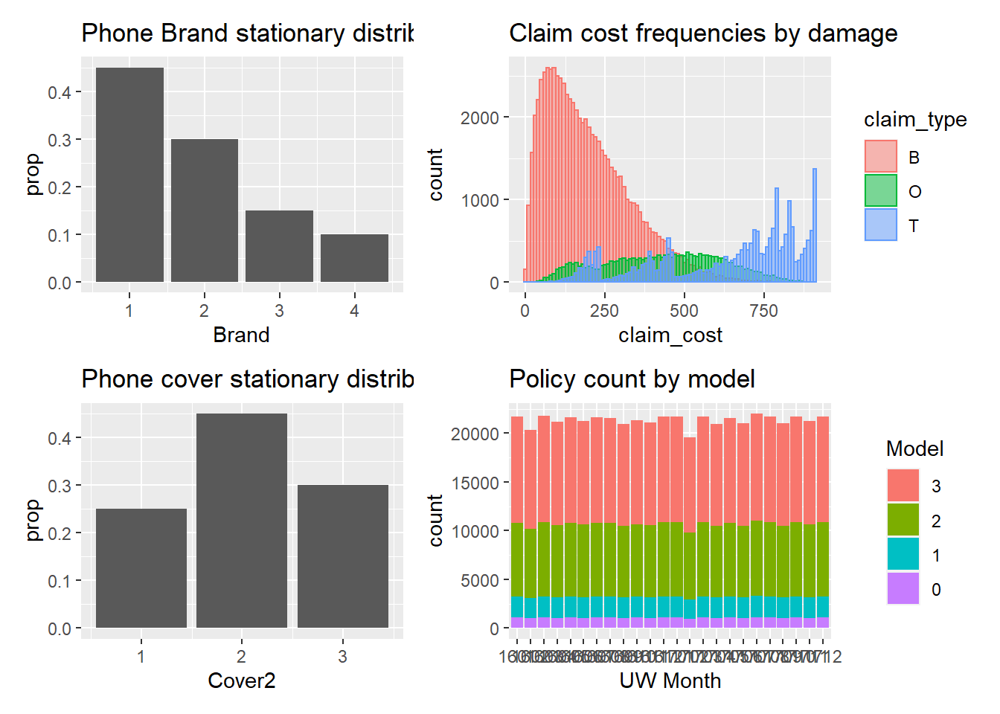
dt_claim[, Days_reportdelay := as.numeric(difftime(date_report, date_occur, units="days"))]
hist(dt_claim[, Days_reportdelay],breaks = 50)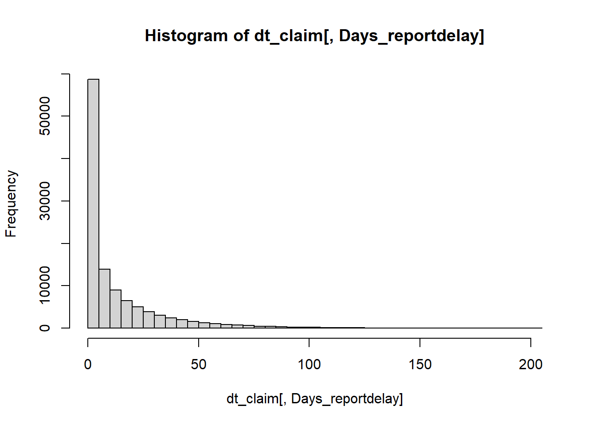
dt_claim[, Days_paymentdelay := as.numeric(difftime(date_pay, date_report, units="days"))]
hist(dt_claim[, Days_paymentdelay],breaks = 60)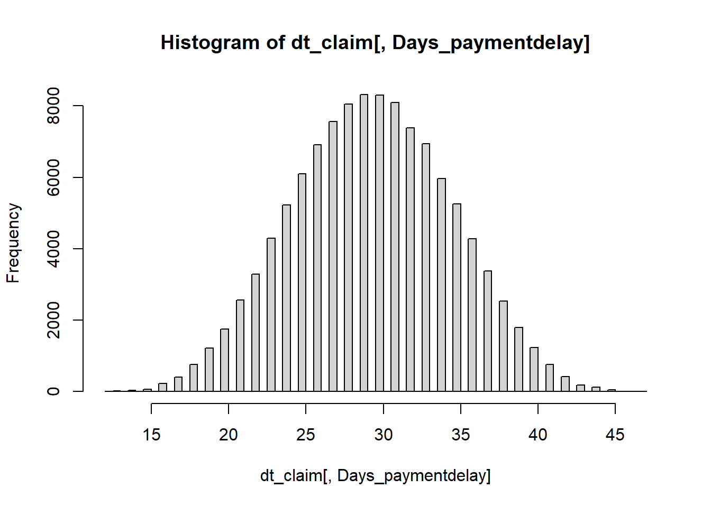
The final set of exhibits are those on slide 44. The only difference of note here is in Chart B, the Claim Rate by phone brand.
Baudry’s exhibits show Brand 1 to have a 5% higher claim frequency than other Brands. From reading the paper I can’t see why we should expect that to be the case. Claim rate varies by phone Model but Model incidence doesn’t vary by Brand. Therefore I can’t see how the Chart B equivalent could be correct given the details in the paper.
I leave the code as is noting the difference but recognising that it will not affect the wider aims of the paper.
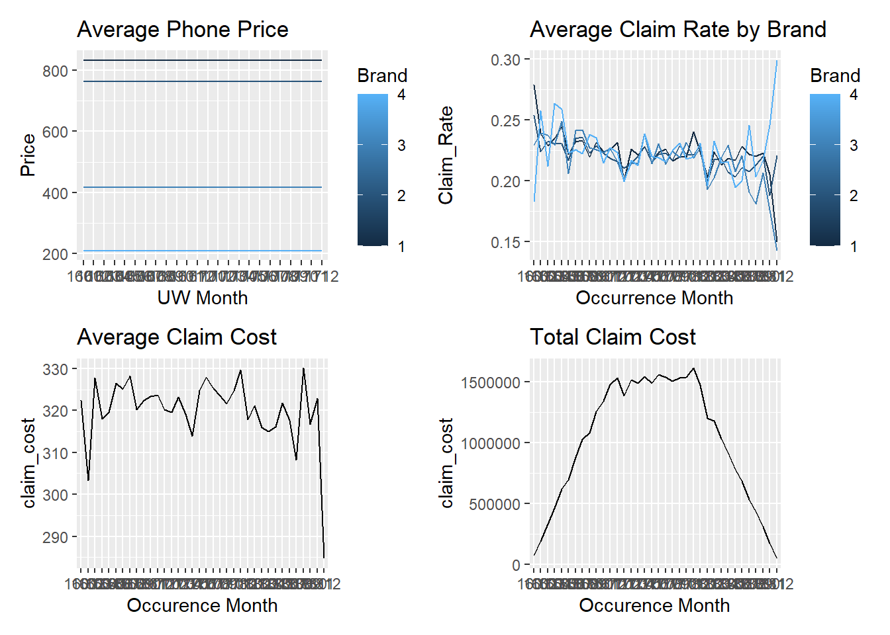
15.2.4 Function to create policy and claim data
The above code can be wrapped into a function which returns a list containing the policy and claim datasets.
simulate_central_scenario <- function(seed = 1234){
#seed = 1234
set.seed(seed)
# Policy data
#~~~~~~~~~~~~~~~~~
# polices sold between start 2016 to end 2017
dt_policydates <- data.table(date_UW = seq(as.Date("2016/1/1"), as.Date("2017/12/31"), "day"))
# number of policies per day follows Poisson process with mean 700 (approx 255,500 pols per annum)
dt_policydates[, ':='(policycount = rpois(.N,700),
date_lapse = date_UW %m+% years(1),
expodays = as.integer(date_UW %m+% years(1) - date_UW),
pol_prefix = year(date_UW)*10000 + month(date_UW)*100 + mday(date_UW))]
# Add columns defining Policy Covers
dt_policydates[, Cover_B := round(policycount * 0.25)]
dt_policydates[, Cover_BO := round(policycount * 0.45)]
dt_policydates[, Cover_BOT := policycount - Cover_B - Cover_BO]
# repeat rows for each policy by UW-Date
dt_policy <- dt_policydates[rep(1:.N, policycount),c("date_UW", "pol_prefix"), with = FALSE][,pol_seq:=1:.N, by=pol_prefix]
# Create a unique policy number
dt_policy[, pol_number := as.character(pol_prefix * 10000 + pol_seq)]
# set join keys
setkey(dt_policy,'date_UW')
setkey(dt_policydates,'date_UW')
# remove pol_prefix before join
dt_policydates[, pol_prefix := NULL]
# join cover from summary file (dt_policydates)
dt_policy <- dt_policy[dt_policydates]
# now create Cover field for each policy row
dt_policy[,Cover := 'BO']
dt_policy[pol_seq <= policycount- Cover_BO,Cover := 'BOT']
dt_policy[pol_seq <= Cover_B,Cover := 'B']
# remove interim calculation fields
dt_policy[, ':='(pol_prefix = NULL,
policycount = NULL,
pol_seq = NULL,
Cover_B = NULL,
Cover_BOT = NULL,
Cover_BO = NULL)]
# Add remaining policy details
dt_policy[, Brand := rep(rep(c(1,2,3,4), c(9,6,3,2)), length.out = .N)]
dt_policy[, Base_Price := rep(rep(c(600,550,300,150), c(9,6,3,2)), length.out = .N)]
# models types and model cost multipliers
for (eachBrand in unique(dt_policy$Brand)) {
dt_policy[Brand == eachBrand, Model := rep(rep(c(3,2,1,0), c(10, 7, 2, 1)), length.out = .N)]
dt_policy[Brand == eachBrand, Model_mult := rep(rep(c(1.15^3, 1.15^2, 1.15^1, 1.15^0), c(10, 7, 2, 1)), length.out = .N)]
}
dt_policy[, Price := ceiling (Base_Price * Model_mult)]
# colums to keep
cols_policy <- c("pol_number",
"date_UW",
"date_lapse",
"Cover",
"Brand",
"Model",
"Price")
dt_policy <- dt_policy[, cols_policy, with = FALSE]
# check output
#head(dt_policy)
#save(dt_policy, file = "./dt_policy.rda")
# Claims data
#~~~~~~~~~~~~~~~~~
# All policies have breakage cover
# claims uniformly sampled from policies
claim <- sample(nrow(dt_policy), size = floor(nrow(dt_policy) * 0.15))
# Claim serverity multiplier sampled from beta distn
dt_claim <- data.table(pol_number = dt_policy[claim, pol_number],
claim_type = 'B',
claim_count = 1,
claim_sev = rbeta(length(claim), 2,5))
# identify all policies with Oxidation cover
cov <- which(dt_policy$Cover != 'B')
# sample claims from policies with cover
claim <- sample(cov, size = floor(length(cov) * 0.05))
# add claims to table
dt_claim <- rbind(dt_claim,
data.table(pol_number = dt_policy[claim, pol_number],
claim_type = 'O',
claim_count = 1,
claim_sev = rbeta(length(claim), 5,3)))
# identify all policies with Theft cover
# for Theft claim frequency varies by Brand
# So need to consider each in turn...
for(myModel in 0:3) {
cov <- which(dt_policy$Cover == 'BOT' & dt_policy$Model == myModel)
claim <- sample(cov, size = floor(length(cov) * 0.05*(1 + myModel)))
dt_claim <- rbind(dt_claim,
data.table(pol_number = dt_policy[claim, pol_number],
claim_type = 'T',
claim_count = 1,
claim_sev = rbeta(length(claim), 5,.5)))
}
# set join keys
setkey(dt_policy, pol_number)
setkey(dt_claim, pol_number)
#join Brand and Price from policy to claim
dt_claim[dt_policy,
on = 'pol_number',
':='(date_UW = i.date_UW,
Price = i.Price,
Brand = i.Brand)]
# use lubridate %m+% date addition operator
dt_claim[, date_lapse := date_UW %m+% years(1)]
dt_claim[, expodays := as.integer(date_lapse - date_UW)]
dt_claim[, occ_delay_days := floor(expodays * runif(.N, 0,1))]
dt_claim[ ,delay_report := floor(365 * rbeta(.N, .4, 10))]
dt_claim[ ,delay_pay := floor(10 + 40* rbeta(.N, 7,7))]
dt_claim[, date_occur := date_UW %m+% days(occ_delay_days)]
dt_claim[, date_report := date_occur %m+% days(delay_report)]
dt_claim[, date_pay := date_report %m+% days(delay_pay)]
dt_claim[, claim_cost := round(Price * claim_sev)]
dt_claim[, clm_prefix := year(date_report)*10000 + month(date_report)*100 + mday(date_report)]
dt_claim[, clm_seq := seq_len(.N), by = clm_prefix]
dt_claim[, clm_number := as.character(clm_prefix * 10000 + clm_seq)]
# keep only first claim against policy (competing hazards)
setkeyv(dt_claim, c("pol_number", "clm_prefix"))
dt_claim[, polclm_seq := seq_len(.N), by = .(pol_number)]
dt_claim <- dt_claim[polclm_seq == 1,]
# colums to keep
cols_claim <- c("clm_number",
"pol_number",
"claim_type",
"claim_count",
"claim_sev",
"date_occur",
"date_report",
"date_pay",
"claim_cost")
dt_claim <- dt_claim[, cols_claim, with = FALSE]
output <- list()
output$dt_policy <- dt_policy
output$dt_claim <- dt_claim
return(output)
}By calling the function with a seed you can simulate policy and claim datasets - which we will do in the next section.
15.3 Prepare data for modelling
In this section we step through the process to create the underlying data structures that will be used in the machine learning reserving process, as set out in sections 2 and 3 of Baudry’s paper.
15.3.1 A few words before we start
Baudry assumes that a policy follows a Position Dependent Marked Poisson Process for which he uses the following graphical representation.
 Baudry explains the notation and database build in sections 2 and 3 of his paper. It is worth taking the time to familiarise yourself with this way of presenting reserving data as it is a different perspective on the traditional claim triangle.
Baudry explains the notation and database build in sections 2 and 3 of his paper. It is worth taking the time to familiarise yourself with this way of presenting reserving data as it is a different perspective on the traditional claim triangle.
When I first tried to code this paper I had to re-read the approach to building the reserving database many times. Even then the overall process of getting the code to work took weeks and many iterations before it came together for me. So from personal experience I’d say it may take time to understand and follow the details of the approach. Hopefully this series of notebooks will help speed up that process of familiarisation and having made the investment of time exhibits such as the one below will become intuitive.

The data requirements for this approach to reserving are more akin to those used in Pricing. Policy underwriting features are directly used in the reserving process requiring policy and claim records to be joined at the policy exposure period level of granularity. In fact I’d say the data requirements are equivalent to a pricing dataset with two added levels of complexity.
The first additional complexity is that the history of claim transactions are not aggregated over dimensions of time as they would be in Pricing. The second level of complexity is that by keeping those time dimensions, additional data relating to them may be included in the analysis that would not normally be relevant to Pricing annual policies.
This is easiest to explain with some examples:
weather information can be included by joining on the claim occurrence time dimension which may improve IBNR forecasting
claim settlement features such as claim handler hours worked or claims system downtime can be included by joining on claim processing date. This, you could imagine, would help explain internal variation in claim payment patterns.
The table below summarises the reserve models Baudry builds and the classes of explanatory data features each model uses.
| Feature | Description | RBNS | IBNR Frequency | IBNR Severity |
|---|---|---|---|---|
| \(T_{0,p}\) | Underwriting features and policy underwriting date | Y | Y | Y |
| \(t_i - T_{0,p}\) | Policy exposure from underwriting date \(T_0\) to valuation date \(t_i\) | Y | Y | Y |
| \(F_{t_{i,p}}\) | Policy risk features at valuation date \(t_i\) | Y | Y | Y |
| \(E_{T_{0,p}}\) | External information at policy underwriting date \(T_0\) | Y | Y | Y |
| \(E_{T_{1,p}}\) | External information at claim occurrence \(T_1\) | Y | N | N |
| \(E_{T_{2,p}}\) | External information at claim reporting date \(T_2\) | Y | N | N |
| \(I_{t_{i,p}}\) | Internal claim related information up to valuation date \(t_i\) | Y | N | N |
Baudry shows how this extra data can benefit the reserving process and recognises that it is the adoption of machine learning techniques that enable us to work with larger and more granular volumes of data than we are able to with traditional chainladder reserving techniques.
Simulate policy and claim data
We start with a simulated phone insurance policy and claim dataset. I am calling the function from Notebook 1 of this series to create the dataset. Using a fixed seed will ensure you get reproducible simulated dataset.
dt_PhoneData <- simulate_central_scenario(1234)We can now inspect the returned Policy dataset and similarly inspect the returned Claim dataset.
Both have been created to be somewhat similar to standard policy and claim datasets that insurers would extract from their policy and claim administration systems.
Policy
Claim
Join policy and claim data
We start with a simulated phone dataset policy and claim tables.
We wish to join claims to the appropriate policy exposure period. This will be a familiar process to pricing actuaries but may not be familiar to reserving actuaries as it is not a requirement in traditional chain ladder reserving.
For speed and convenience we will use the data.table::foverlaps R function, which needs the tables being joined to have common keys for policy number and time periods.
setnames(dt_policy, c('date_UW', 'date_lapse'), c('date_pol_start', 'date_pol_end'))
# set policy start and end dates in foverlap friendly format
dt_policy[, date_pol_start:= floor_date(date_pol_start, unit= "second")]
dt_policy[, date_pol_end:= floor_date(date_pol_end, unit= "second") - 1]
# create a dummy end claim occurrence date for foverlap
dt_claim[, date_occur:= floor_date(date_occur, unit= "second")]
dt_claim[, date_occur_end:= date_occur]
dt_claim[, date_report:= floor_date(date_report, unit= "second")]
dt_claim[, date_pay:= floor_date(date_pay, unit= "second")]
# set keys for claim join (by policy and dates)
setkey(dt_claim, pol_number, date_occur, date_occur_end)
setkey(dt_policy, pol_number, date_pol_start, date_pol_end)
# use foverlaps to attach claim to right occurrence period and policy
dt_polclaim <- foverlaps(dt_policy, dt_claim, type="any") ## return overlap indices
dt_polclaim[, date_occur_end := NULL]The first few rows of the resulting table are shown below where we can see the first policy has an attached claim.
15.3.1.1 Check for multi-claim policies
In a real world situation it is possible for policies to have multiple claims in an insurance period. In such circumstances care needs to be taken in matching policy exposure periods and claims, typically this is done by splitting a policy into sequences that stop at the date of each claim.
Our simulated data does not have this complication, as this check shows, the maximum number of sequences is 1.
setkey(dt_polclaim, pol_number, date_pol_start)
# create 2 new cols that count how many claims against each policy
dt_polclaim[,
':='(pol_seq = seq_len(.N),
pol_seq_max = .N),
by = c('pol_number', 'date_pol_start') ]
table(dt_polclaim[, pol_seq_max])
1
512246 Not all policies have claims, resulting in NA fields in the joined dataset. To facilitate future processing we need to deal with NA fields in the joined policy and claims dataset. Missing dates are set to a long dated future point. Where there are no claims, we set claim counts and costs to zero, resulting in the following table.
#set NA dates to 31/12/2999
lst_datefields <- grep(names(dt_polclaim),pattern = "date", value = TRUE)
for (datefield in lst_datefields)
set(dt_polclaim,which(is.na(dt_polclaim[[datefield]])),datefield,as_datetime("2199-12-31 23:59:59 UTC"))
#set other NAs to zero (claim counts and costs)
for (field in c("claim_count", "claim_sev", "claim_cost"))
set(dt_polclaim,which(is.na(dt_polclaim[[field]])),field,0)15.3.2 Timeslicing claim payments
Although this paper works with individual policy and claim transactions those transactions are collated into time slices.
Baudry selected time slices of 30 days in length starting from 01 Jan 2016 (Section 5 page 13).

In the code below, for every individual policy and claim transaction; ie row in dt_polclaim, we are creating an extra column for each possible timeslice and recording in the column the cumulative claim cost up to that time slice.
Given that in the simple simulated dataset we only have one claim payment for any claim, the code to do this is rather more simple than would otherwise be the case. The code below would need to be amended if there are partial claim payments.
This time sliced dataset becomes the source of our RBNS and IBNER datasets used in subsequent machine learning steps.
lst_Date_slice <- floor_date(seq(as.Date("2016/1/1"), as.Date("2019/06/30"), by = 30), unit= "second")
# Time slice Policy & claims
for (i in 1:length(lst_Date_slice)){
dt_polclaim[date_pay<= lst_Date_slice[i], paste0('P_t_', format(lst_Date_slice[i], "%Y%m%d")):= claim_cost]
set(dt_polclaim,which(is.na(dt_polclaim[[paste0('P_t_', format(lst_Date_slice[i], "%Y%m%d"))]])),paste0('P_t_', format(lst_Date_slice[i], "%Y%m%d")),0)
}
# sort data by policynumber
setkey(dt_polclaim, pol_number)Looking at the data can see the output of timeslicing. You’ll need to scroll to the right of the table to see the columns labeled P_t_20160101 through to P_t_20190614.
15.3.3 Creating RBNS and IBNER datasets
Before we create the RBNS and IBNER datasets we must pick a valuation point from the available timeslices. I’m selecting the 10th point for illustration, which is the 10th 30 day period from 01/01/2016, ie a valuation date of 27/09/2016.
#_ 2.1 Set initial variables ----
#~~~~~~~~~~~~~~~~~~~~~~~
i <- valuation <- 10
t_i <- lst_Date_slice[i]
delta <- min(i, length(lst_Date_slice) - i + 1)In a traditional approach we would be creating reserving triangles with ten 30-day duration development periods.
As we will see the approach adopted by Baudry, in section 3 of his paper, is somewhat different and is much closer to the sort of datasets that Pricing Actuaries are familiar with.
15.3.3.1 Creating RBNS dataset
We start with the RBNS dataset.
The training data for the for the RBNS reserves will consist of all claims reported prior to the valuation date. This data has been joined to the policy exposure data to enable policy related features to be used as explanatory variables in the RBNS reserve calculation.
A training dataset will enable us to build a model of RBNS reserve requirements at historic valuation dates. But what we really require is a view of the RBNS reserve at the valuation date. To calculate this we need to create a test dataset that contains values of the explanatory features at each future claim payment period.
By making model prediction for each row of the test dataset we can calculate the RBNS reserve as the sum of predicted future payments.
15.3.3.2 RBNS dataset functions
To create the RBNS train and test datasets we have provided two functions RBNS_Train_ijk and RBNS_Test_ijk which take as an input the joined policy and claims dataset and return data in a format suitable for applying machine learning.
They are actually returning the ‘triangle’ data for all occurrence periods, i, for a specified:
- claim development delay, j; and
- model type k
For values of k equal to 1 the model data is essentially including all claim transactions up to the last calendar period prior to the valuation date. When k is set to 2 effectively the most recent calendar period’s transactions are ignored. Although in this example only models with a k value of 1 are created, Baudry’s framework allows for multiple k value models to be built. In doing so multiple models are created, effectively using aged data which would allow an ensemble modeling approach to be used. Such use of multiple k values would be similar to a Bornhuetter-Ferguson approach to modeling.
15.3.3.2.1 RBNS_Train
The code for creating the RBNS datasets is rather involved so detailed explanation has been skipped over here.
Interested readers are encouraged to come back to this stage and inspect the code and Baudry’s paper once they have an overview of the wider process.
RBNS_Train_ijk <- function(dt_policy_claim, date_i, j_dev_period, k, reserving_dates, model_vars) {
# # debugging
# #~~~~~~~~~~~~~
# dt_policy_claim = dt_polclaim
# date_i = t_i
# j_dev_period = 1
# k = 1
# reserving_dates = lst_Date_slice
# #~~~~~~~~~~~~~
#
date_i <- as.Date(date_i)
date_k <- (reserving_dates[which(reserving_dates == date_i) - k + 1])
date_j <- (reserving_dates[which(reserving_dates == date_k) - j_dev_period])
#i - j - k + 1 (predictor as at date)
date_lookup <- (reserving_dates[which(reserving_dates == (date_i)) - j_dev_period -k + 1])
#i - k to calculate target incremental paid
target_lookup <- (reserving_dates[which(reserving_dates == (date_i)) - k])
#i -k + 1 to calculate target incremental paid
target_lookup_next <- (reserving_dates[which(reserving_dates == (date_i)) - k + 1])
#definition of reported but not settled
dt_policy_claim <- dt_policy_claim[(date_report <= date_lookup) & (date_pay > date_lookup)]
#simulated data assumes one payment so just need to check date paid in taget calc
dt_policy_claim[, ':='(date_lookup = date_lookup,
delay_train = as.numeric(date_lookup - date_pol_start), #extra feature
j = j_dev_period,
k = k,
target = ifelse(date_pay<=target_lookup,0,ifelse(date_pay<=target_lookup_next,claim_cost,0)))]
return(dt_policy_claim[, model_vars, with = FALSE])
}15.3.3.2.2 RBNS_Test
The code for creating the RBNS datasets is rather involved so detailed explanation has been skipped over here.
Interested readers are encouraged to come back to this stage and inspect the code and Baudry’s paper once they have an overview of the wider process.
RBNS_Test_ijk <- function(dt_policy_claim, date_i,j_dev_period, k, reserving_dates, model_vars) {
# # debugging
# #~~~~~~~~~~~~~
# dt_policy_claim = dt_polclaim
# date_i = t_i
# j_dev_period = 1
# k = 1
# reserving_dates = lst_Date_slice
# #~~~~~~~~~~~~~
#
date_i <- as.Date(date_i)
#i - j - k + 1 (predictor as at date)
date_lookup <- (reserving_dates[which(reserving_dates == (date_i))])
#i - k to calculate target incremental paid
target_lookup <- (reserving_dates[which(reserving_dates == (date_i)) +j_dev_period - 1])
#i -k + 1 to calculate targte incremental paid
target_lookup_next <- (reserving_dates[which(reserving_dates == (date_i)) + j_dev_period])
#definition of reported but not settled
# P_te_RBNS rowids of policies needing an RBNS reserve
dt_policy_claim <- dt_policy_claim[date_report <= date_lookup & date_lookup < date_pay]
#model assumes one payment so just need to check date paid
dt_policy_claim[, ':='(date_lookup = date_lookup,
delay_train = as.numeric(date_lookup - date_pol_start), #extra feature
j = j_dev_period,
k = k,
target = ifelse(date_pay<=target_lookup,0,ifelse(date_pay<=target_lookup_next,claim_cost,0)))]
return(dt_policy_claim[, model_vars, with = FALSE])
}15.3.3.3 RBNS function calls
The RBNS train and test datasets are created by calling the RBNS_Train and RBNS_Test functions passing, as parameters to them, the names of the joined policy and claim dataset, valuation dates and model features.
The functions RBNS_Train and RBNS_Test iterate over valid values of j and k calling the RBNS_Train_ijk and RBNS_Test_ijk functions to create the complete train and test datasets as illustrated below.


RBNS_Train <- function(dt_policy_claim, date_i, i, k, reserving_dates, model_vars) {
# Create a combined TRAIN dataset across all k and j combos
for (k in 1:k){
if (k==1) dt_train <- NULL
for (j in 1:(i - k + 1)){
dt_train <- rbind(dt_train, RBNS_Train_ijk(dt_polclaim, date_i, j, k,reserving_dates, model_vars))
}
}
return(dt_train)
}RBNS_Test <- function(dt_policy_claim, date_i, delta, k, reserving_dates, model_vars) {
# Create a combined TEST dataset across all k and j combos
for (k in 1:k){
if (k==1) dt_test <- NULL
for (j in 1:(delta - k + 1)){
dt_test <- rbind(dt_test, RBNS_Test_ijk(dt_polclaim, date_i, j, k,reserving_dates, model_vars))
}
}
return(dt_test)
}The animation below attempts to summarise the overall data preparation and model prediction process.

So having given a rough outline of the data creation process let’s now call the functions to create the RBNS datasets.
#define modelVars
RBNS_model_vars <- c("clm_number",
"pol_number",
"j",
"k",
"date_pol_start",
"date_occur",
"date_report",
"date_pay",
"Cover",
"claim_type",
"Brand",
"Model",
"Price",
"target"
)
# Create a combined TRAIN dataset for k = 1 and all valid j delay values
dt_RBNS_train <- RBNS_Train(dt_polclaim, t_i, i, k = 1, lst_Date_slice, RBNS_model_vars)
# Create a combined TEST dataset for k = 1 and all valid j delay values
dt_RBNS_test <- RBNS_Test(dt_polclaim, t_i, delta, k = 1, lst_Date_slice, RBNS_model_vars)The train and test datasets are then joined into a single dataset and a small amount of tidying is done to make them ready for use.
# Add a flag to determine which rows are from the trainset and which from the test set
dt_RBNS_train[, flgTrain := 1]
dt_RBNS_test[, flgTrain := 0]
# combine into a single RBNS dataset
dt_All_RBNS <- rbind(dt_RBNS_train, dt_RBNS_test)The important aspects of the tidying relate to creating usable delay metrics from the numerous dates and converting some character features such as cover and claim type into factors.
# order and create some delay fields
setkey(dt_All_RBNS, clm_number, k, j)
dt_All_RBNS[, Count := .N , by =clm_number]
#create delay measure by converting from seconds to day periods
dt_All_RBNS[, ':='(
delay_uw_occ = ifelse(year(date_occur) == 2199,
-1,
ceiling((as.numeric(date_occur) - as.numeric(date_pol_start)) / (24 * 60 * 60))
),
delay_occ_rep = ifelse(year(date_occur) == 2199,
-1,
ceiling((as.numeric(date_report) - as.numeric(date_occur)) / (24 * 60 * 60))
),
delay_uw_val = ceiling((as.numeric(t_i) - as.numeric(date_pol_start)) / (24 * 60 * 60)),
delay_rep_pay = ceiling((as.numeric(date_pay) - as.numeric(date_report)) / (24 * 60 * 60)),
date_uw = ceiling(as.numeric(date_pol_start) / (24 * 60 * 60)),
Cover = as.factor(Cover),
claim_type = as.factor(claim_type)
)]15.3.3.4 Creating IBNR dataset
The IBNR dataset creation follows a similar process to RBNS but is a little more complex. Any policy with a live exposure can give rise to an IBNR claim so the training dataset consists of all policy exposure periods prior to the valuation date.
From this we train two models:
- a frequency model to predict if there will be an IBNR claim; and
- a severity model to predict the expected cost of any IBNR claim
This is very similar to the traditional pricing approach except that we can add information relating to the claim occurrence date (eg weather information could be useful for Storm losses) and we also predict the incremental run-off of the exposure period.
15.3.3.5 IBNR dataset functions
15.3.3.5.1 IBNR_Frequency Train
The code for creating the IBNR datasets is rather involved so detailed explanation has been skipped over here.
Interested readers are encouraged to come back to this stage and inspect the code and Baudry’s paper once they have an overview of the wider process.
IBNR_Freq_Train_ijk <- function(dt_policy_claim, date_i, j_dev_period, k, reserving_dates, model_vars, verbose = FALSE) {
# # debugging
# #~~~~~~~~~~~~~
# dt_policy_claim = dt_polclaim
# date_i = t_i
# j_dev_period = 1
# k = 1
# reserving_dates = lst_Date_slice
# model_vars <- IBNR_model_vars
# #~~~~~~~~~~~~~
date_i <- as.Date(date_i)
date_k <- (reserving_dates[which(reserving_dates == date_i) - k + 1])
date_j <- (reserving_dates[which(reserving_dates == date_k) - j_dev_period])
date_lookup <- (reserving_dates[which(reserving_dates == (date_i)) - j_dev_period -k + 1]) #i - j - k + 1 (predictor as at date)
target_lookup <- (reserving_dates[which(reserving_dates == (date_i)) - k]) #i - k to calculate target incremental paid
target_lookup_next <- (reserving_dates[which(reserving_dates == (date_i)) - k + 1]) #i -k + 1 to calculate targte incremental paid
if(verbose) cat(paste("Valn date", date_i, ", j = ", j_dev_period, ", k =", k, "\n"))
dt_policy_claim <- dt_policy_claim[date_pol_start < date_lookup & date_lookup < date_report] #definition of IBNR
dt_policy_claim[, ':='(date_lookup = date_lookup,
delay_train = as.numeric(date_lookup - date_pol_start), #extra feature
j = j_dev_period,
k = k,
exposure = round((pmin(as.numeric(as.numeric(date_pol_end)), as.numeric(floor_date(date_i, unit= "second")))
- as.numeric(date_pol_start))/(24*60*60*365), 3),
target = ifelse(target_lookup <= date_pay & date_pay< target_lookup_next & date_occur <= date_lookup ,1,0))]
dt_policy_claim <- dt_policy_claim [,.(exposure = sum(exposure)), by= c(setdiff(model_vars, 'exposure')) ]
return(dt_policy_claim[, model_vars, with = FALSE])
}15.3.3.5.2 IBNR_Loss Train
The code for creating the IBNR datasets is rather involved so detailed explanation has been skipped over here.
Interested readers are encouraged to come back to this stage and inspect the code and Baudry’s paper once they have an overview of the wider process.
IBNR_Loss_Train_ijk <- function(dt_policy_claim, date_i, j_dev_period, k, reserving_dates, model_vars, verbose = FALSE) {
# # debugging
# #~~~~~~~~~~~~~
# dt_policy_claim = dt_polclaim
# date_i = t_i
# j_dev_period = 1
# k = 1
# reserving_dates = lst_Date_slice
# model_vars <- IBNR_model_vars
# #~~~~~~~~~~~~~
date_i <- as.Date(date_i)
date_k <- (reserving_dates[which(reserving_dates == date_i) - k + 1])
date_j <- (reserving_dates[which(reserving_dates == date_k) - j_dev_period])
date_lookup <- (reserving_dates[which(reserving_dates == (date_i)) - j_dev_period -k + 1]) #i - j - k + 1 (predictor as at date)
target_lookup <- (reserving_dates[which(reserving_dates == (date_i)) - k]) #i - k to calculate target incremental paid
target_lookup_next <- (reserving_dates[which(reserving_dates == (date_i)) - k + 1]) #i -k + 1 to calculate targte incremental paid
if(verbose) cat(paste("Valn date", date_i, ", j = ", j_dev_period, ", k =", k, "\n"))
dt_policy_claim <- dt_policy_claim[(date_lookup < date_report) & (date_occur < date_lookup) & (target_lookup >= date_pay & date_pay < target_lookup_next)] #definition of reported but not settled
dt_policy_claim[, ':='(date_lookup = date_lookup,
delay_train = as.numeric(date_lookup - date_pol_start), #extra feature
j = j_dev_period,
k = k,
exposure = 1, #all claims trated equal
target = ifelse(target_lookup >= date_pay & date_pay < target_lookup_next,claim_cost,0) #model assumes one payment so just need to check date paid
)]
return(dt_policy_claim[, model_vars, with = FALSE])
}15.3.3.5.3 IBNR Test
The code for creating the IBNR datasets is rather involved so detailed explanation has been skipped over here.
Interested readers are encouraged to come back to this stage and inspect the code and Baudry’s paper once they have an overview of the wider process.
IBNR_Test_ijk <- function(dt_policy_claim, date_i,j_dev_period, k, reserving_dates, model_vars, verbose = FALSE) {
## debugging
##~~~~~~~~~~~~~
#dt_policy_claim = dt_polclaim
#date_i = t_i
#j_dev_period = 8
#k = 1
#reserving_dates = lst_Date_slice
#model_vars <- IBNR_model_vars
##~~~~~~~~~~~~~
date_i <- as.Date(date_i)
date_lookup <- (reserving_dates[which(reserving_dates == (date_i))]) #i - j - k + 1 (predictor as at date)
target_lookup <- (reserving_dates[which(reserving_dates == (date_i)) +j_dev_period - 1]) #i - k to calculate target incremental paid
target_lookup_next <- (reserving_dates[which(reserving_dates == (date_i)) + j_dev_period]) #i -k + 1 to calculate targte incremental paid
if(verbose) cat(paste("Valn date", date_i, ", j = ", j_dev_period, ", k =", k, "\n"))
# P_te_IBNR rowids of policies needing an RBNS reserve
dt_policy_claim <- dt_policy_claim[date_pol_start <= date_lookup & date_lookup < date_report] #IBNR
dt_policy_claim[, ':='(date_lookup = date_lookup,
delay_train = as.numeric(date_lookup - date_pol_start), #extra feature
j = j_dev_period,
k = k,
exposure = round((pmin(as.numeric(as.numeric(date_pol_end)), as.numeric(floor_date(date_i, unit= "second")))
- as.numeric(date_pol_start))/(24*60*60*365),3),
target = ifelse(target_lookup <= date_pay & date_pay < target_lookup_next & date_occur <= date_lookup ,claim_cost,0))] #model assumes one payment so just need to check date paid
dt_policy_claim <- dt_policy_claim [,.(exposure = sum(exposure)), by= c(setdiff(model_vars, 'exposure')) ]
return(dt_policy_claim[, model_vars, with = FALSE])
}15.3.3.6 IBNR function calls
The IBNR train and test datasets are created by calling the IBNR_Train and IBNR_Test functions passing, as parameters to them, the names of the joined policy and claim dataset, valuation dates and model features.
The functions IBNR_Train and IBNR_Test iterate over valid values of j and k calling the IBNR_Freq_ijk, IBNR_Loss_ijk and IBNR_Test_ijk functions to create the complete train and test datasets as set out in the code below.
The princple and code is similar to that of RBNS, except that the training data covers both claim counts and costs.
IBNR_Train <- function(dt_policy_claim, date_i, i, k, reserving_dates, model_vars, verbose = FALSE) {
# Create a combined TRAIN dataset across all k and j combos
for (k in 1:k){
if (k==1){
dt_train_Freq <- NULL
dt_train_Loss <- NULL
}
for (j in 1:(i - k + 1)){
dt_train_Freq <- rbind(dt_train_Freq, IBNR_Freq_Train_ijk(dt_policy_claim, date_i, j, k,reserving_dates, model_vars, verbose))
dt_train_Loss <- rbind(dt_train_Loss, IBNR_Loss_Train_ijk(dt_policy_claim, date_i, j, k,reserving_dates, model_vars, verbose))
}
}
return(list(Freq = dt_train_Freq, Loss = dt_train_Loss))
}IBNR_Test <- function(dt_policy_claim, date_i, delta, k, reserving_dates, model_vars, verbose = FALSE) {
# Create a combined TEST dataset across all k and j combos
for (k in 1:k){
if (k==1) dt_test <- NULL
for (j in 1:(delta - k + 1)){
dt_test <- rbind(dt_test, IBNR_Test_ijk(dt_policy_claim, date_i, j, k,reserving_dates, model_vars, verbose))
}
}
return(dt_test)
}So having given a rough outline of the data creation process lets now call the functions to create the IBNR datasets.
#define IBNR modelVars
IBNR_model_vars <- c("clm_number",
"pol_number",
"j",
"k",
"exposure",
"date_pol_start",
"date_occur",
"date_report",
"date_pay",
"Cover",
"Brand",
"Model",
"Price",
"target")
# Create a combined TRAIN dataset for k = 1 and all valid j delay values
lst_IBNR_train <- IBNR_Train(dt_polclaim, t_i, i, k = 1,lst_Date_slice, IBNR_model_vars)
# Create a combined TEST dataset for k = 1 and all valid j delay values
dt_IBNR_test <- IBNR_Test(dt_polclaim, t_i, delta, k = 1,lst_Date_slice, IBNR_model_vars)The train and test datasets are then joined into a single dataset and a small amount of tidying is done to make them ready for use.
lst_IBNR_train$Freq[, flgTrain := 1]
lst_IBNR_train$Loss[, flgTrain := 2]
dt_IBNR_test[, flgTrain := 0]
dt_All_IBNR <- rbind(lst_IBNR_train$Freq, lst_IBNR_train$Loss, dt_IBNR_test)The important aspects of the tidying relate to creating useable delay metrics from the numerous dates and converting some character features such as cover and claim type into factors.
# order and create some delay fields
setkey(dt_All_IBNR, clm_number, k, j)
dt_All_IBNR[, Count := .N , by =clm_number]
dt_All_IBNR[,':='( delay_uw_occ = fifelse(year(date_occur) == 2199,
-1,
ceiling((as.numeric(date_occur) - as.numeric(date_pol_start))
/(24*60*60))
),
delay_occ_rep = fifelse(year(date_occur) == 2199,
-1,
ceiling((as.numeric(date_report) - as.numeric(date_occur))
/(24*60*60))
),
delay_rep_pay = fifelse(year(date_occur) == 2199,
-1,
ceiling((as.numeric(date_pay) - as.numeric(date_report))
/(24*60*60))
),
delay_uw_val = ceiling((as.numeric(t_i) - as.numeric(date_pol_start))/(24*60*60)),
date_uw = ceiling(as.numeric(date_pol_start)/(24*60*60)),
Cover = as.factor(Cover))]15.3.4 Dataset inspection
So we now have two datasets;
- dt_ALL_RBNS for calculating RBNS reserves
- dt_ALL_IBNR for calculating IBNR reserves
Each dataset contains both training rows and test rows. The test rows are used for model prediction; which in this case means RBNS or IBNR reserve calculation.
IBNR reserves are calculated using a frequency * severity model approach. IBNR therefore requires two models and two training datasets. Training rows for the claim frequency model are identified as rows with a flgTrain column value of 1. Training rows for the claim severity model are identified as rows with a flgTrain column value of 2.
In both datsets the test rows are identified as rows with a flgTrain column value of 0.
Let’s have a quick look at the datasets.
15.3.4.1 RBNS
The RBNS dataset has 21 columns and 43,596 rows.
In a traditional reserving exercise this would have been summarised as a 10 x 10 triangle ie 50 rows. We have far more rows of data for 3 main reasons;
- training data is presented without aggregation so there is a row for each one of the 14,878 claims that have been reported up until 2016-09-27
- the machine learning training dataset is not just the latest triangle of data as at the valuation date. It is also every possible historic triangle prior to the valuation date as illustrated in the animation above.
- the dataset also contains test rows ie the features needed to predict each future period from the current valuation date
15.3.4.2 IBNR
The IBNR dataset has 21 columns and 2,477,886 rows.
In a traditional reserving exercise this would have been summarised as a 10 x 10 triangle ie 50 rows. We have far more rows of data and far more that we did for the RBNS dataset.
Again the the same 3 principles apply to the IBNR row count. However this will lead to many more rows of data because we are training two models and the claim frequency model will require a row for every past policy exposure period and of course there should be orders of magnitude more exposure rows than claim rows!
15.3.5 Summary
I’ve deliberately rushed through the creation of the datasets so we can see the end output shown above. Interested readers are encourage to revisit and review the RBNS and IBNER data creation process to gain a deeper understanding. In doing so they will be better placed to adapt the code provided to their own circumstances.
The above code can be wrapped into a series of functions which, given a joined policy and claim dataset and a valuation date, will return the reserving datasets needed for machine learning. In notebook 3 of this series we will create and use such functions prior to fitting a machine learning model to the training data and then use it to make reserve predictions.
15.4 Modelling and analysing the data
In this section we step through the process to apply machine learning techniques in order to create reserve estimates following the techniques set out in sections 3 and 4 of Baudry’s paper.
15.4.1 Model build
I will use the xgboost R machine learning package to build the models. In Baudry’s original paper he used the extraTrees package; a variant upon RandomForests.
Xgboost has been selected as it is the most popular implementation of the gradient boosting machine (GBM) algorithm. GBMs have been known since around 2015 to be the most accurate algorithmic technique for regression and classification tasks.
The code and modelling process for each reserve type is very similar so they are shown in the tabbed sections below rather that repeating in-line.
15.4.1.1 RBNS model
Starting with the RBNS reserves we will first build a model upon the training data using a cross validated approach to enable selection of key xgboost hyperparameters.
Then using optimal parameters we retrain on the complete training dataset. This trained model is then scored against the test data in order to create predictions from which the RBNS reserve can be calculated.
15.4.1.1.1 Creating xgboost dataset
Xgboost requires its data to be in a specific format; a dense matrix form called a DMatrix, for which there is a function xgb.DMatrix. Not all variable types can be passed to xgb.DMatrix in particular categorical or nominal variables such as Brand have to be converted from text to numeric values.
For this example I’ve chosen to use the parsnip package and create a recipe that converts nominal predictor values into a one-hot-encoded form.
RBNS_predictors <- c("j",
"k",
"Cover",
"claim_type",
"Brand",
"Model",
"Price",
#"date_uw",
#"delay_uw_occ",
"delay_occ_rep")
rowList_RBNS <- list(train=dt_All_RBNS[, which(flgTrain==1)],
test=dt_All_RBNS[, which(flgTrain==0)],
all = 1:nrow(dt_All_RBNS))
RBNS_rec <- recipe( ~ ., data = dt_All_RBNS[, RBNS_predictors, with = FALSE]) |>
step_dummy(all_nominal(), one_hot = TRUE) %>%
prep()
df.RBNS_train <- bake(RBNS_rec, new_data = dt_All_RBNS[rowList_RBNS$train,] )
df.RBNS_test <- bake(RBNS_rec, new_data = dt_All_RBNS[rowList_RBNS$test,] )
df.RBNS_all <- bake(RBNS_rec, new_data = dt_All_RBNS )
xgb.RBNS_DMat.train <- xgb.DMatrix(data = as.matrix(df.RBNS_train),
label = dt_All_RBNS[rowList_RBNS$train, target])
xgb.RBNS_DMat.test <- xgb.DMatrix(data = as.matrix(df.RBNS_test),
label = dt_All_RBNS[rowList_RBNS$test, target])
xgb.RBNS_DMat.all <- xgb.DMatrix(data = as.matrix(df.RBNS_all),
label = dt_All_RBNS[, target])15.4.1.1.2 Fit initial model using cross validation
Having prepared the data for xgboost I can now fit an initial model. I’ve used a simple set of parameters and used cross validation to select the optimal number of boosted trees (nrounds) for these parameter selections by calling the xgb.cv function with early stopping.
I have used the reg:tweedie objective function based upon inspection of the target variable.
summary(dt_All_RBNS[rowList_RBNS$train, target]) Min. 1st Qu. Median Mean 3rd Qu. Max.
0.00 0.00 0.00 76.44 0.00 913.00 hist(dt_All_RBNS[rowList_RBNS$train, target])
In a real world example a process of parameter tuning would be undertaken in order to select more optimal parameters.
param <- list(
objective = "reg:tweedie",
max_depth = 2L, # tree-depth
subsample = 0.75, # randomly sample rows before fitting each tree
colsample_bytree = 0.8, # randomly sample columns before fitting each tree
min.child.weight = 10, # minimum weight per leaf
eta = 0.1 # Learning rate
)
# Train model with cross validation
set.seed(1984) # for repeatability
xgb_RBNS_CV <- xgb.cv(
params = param,
data = xgb.RBNS_DMat.train,
nrounds = 500, # Maximum number of trees to build
nfold = 5,
early_stopping_rounds = 10L, # Stops algorithm early if performance has not improved in
print_every_n = 10L, # How often to print to console
prediction = TRUE # Keeps the predictions
)[1] train-tweedie-nloglik@1.5:197.388756+1.296594 test-tweedie-nloglik@1.5:197.391244+4.609216
Multiple eval metrics are present. Will use test_tweedie_nloglik@1.5 for early stopping.
Will train until test_tweedie_nloglik@1.5 hasn't improved in 10 rounds.
[11] train-tweedie-nloglik@1.5:75.924330+0.469210 test-tweedie-nloglik@1.5:75.942832+1.753744
[21] train-tweedie-nloglik@1.5:34.531029+0.276990 test-tweedie-nloglik@1.5:34.546202+0.679007
[31] train-tweedie-nloglik@1.5:22.710654+0.268914 test-tweedie-nloglik@1.5:22.724562+0.308235
[41] train-tweedie-nloglik@1.5:20.129801+0.104845 test-tweedie-nloglik@1.5:20.152850+0.320732
[51] train-tweedie-nloglik@1.5:19.632863+0.090769 test-tweedie-nloglik@1.5:19.671306+0.309964
[61] train-tweedie-nloglik@1.5:19.500483+0.086323 test-tweedie-nloglik@1.5:19.538232+0.308355
[71] train-tweedie-nloglik@1.5:19.444729+0.082132 test-tweedie-nloglik@1.5:19.493532+0.308265
[81] train-tweedie-nloglik@1.5:19.414329+0.078574 test-tweedie-nloglik@1.5:19.475748+0.309372
[91] train-tweedie-nloglik@1.5:19.398779+0.078291 test-tweedie-nloglik@1.5:19.469874+0.307553
[101] train-tweedie-nloglik@1.5:19.387133+0.077247 test-tweedie-nloglik@1.5:19.467463+0.308378
[111] train-tweedie-nloglik@1.5:19.375232+0.076711 test-tweedie-nloglik@1.5:19.460278+0.304426
[121] train-tweedie-nloglik@1.5:19.362611+0.075821 test-tweedie-nloglik@1.5:19.464628+0.312824
Stopping. Best iteration:
[116] train-tweedie-nloglik@1.5:19.368173+0.075742 test-tweedie-nloglik@1.5:19.459806+0.308833Having fit the model we store the out-of-fold predictions.
dt_All_RBNS[rowList_RBNS$train, preds_oof := xgb_RBNS_CV$pred]15.4.1.1.3 Fit final model on all training data
Having fit the model using 5 fold cross validation we observe the optimum number of fitting rounds to be 116.
We can then use this to train a final model on all the data.
xgb_RBNS_Fit <- xgb.train(
params = param,
data = xgb.RBNS_DMat.train,
nrounds = xgb_RBNS_CV$best_iteration,
# base_score = 1,
watchlist = list(train=xgb.RBNS_DMat.train, test=xgb.RBNS_DMat.test) ,
print_every_n = 10
)[1] train-tweedie-nloglik@1.5:197.153822 test-tweedie-nloglik@1.5:82.790522
[11] train-tweedie-nloglik@1.5:75.846599 test-tweedie-nloglik@1.5:32.097264
[21] train-tweedie-nloglik@1.5:34.402921 test-tweedie-nloglik@1.5:14.722707
[31] train-tweedie-nloglik@1.5:22.522187 test-tweedie-nloglik@1.5:9.660561
[41] train-tweedie-nloglik@1.5:20.075724 test-tweedie-nloglik@1.5:8.625063
[51] train-tweedie-nloglik@1.5:19.604785 test-tweedie-nloglik@1.5:8.390317
[61] train-tweedie-nloglik@1.5:19.486131 test-tweedie-nloglik@1.5:8.323290
[71] train-tweedie-nloglik@1.5:19.439339 test-tweedie-nloglik@1.5:8.290276
[81] train-tweedie-nloglik@1.5:19.412141 test-tweedie-nloglik@1.5:8.275901
[91] train-tweedie-nloglik@1.5:19.391867 test-tweedie-nloglik@1.5:8.265842
[101] train-tweedie-nloglik@1.5:19.379859 test-tweedie-nloglik@1.5:8.260251
[111] train-tweedie-nloglik@1.5:19.370579 test-tweedie-nloglik@1.5:8.260420
[116] train-tweedie-nloglik@1.5:19.367158 test-tweedie-nloglik@1.5:8.260664 dt_All_RBNS[, preds_full := predict(xgb_RBNS_Fit,xgb.RBNS_DMat.all)]15.4.1.1.4 Inspect model fit
Having fitted the full model we can then inspect the model fit. The traditional way of inspecting global model feature importance is to use the gain chart.
#default feature importance by gain
featImp_RBNS <- xgb.importance(xgb_RBNS_Fit, feature_names = colnames(xgb.RBNS_DMat.train))
xgb.plot.importance(featImp_RBNS, main="Feature Importance - RBNS")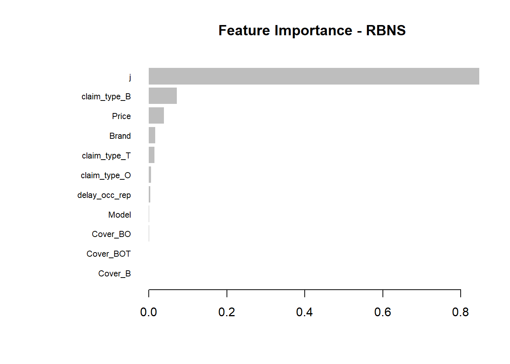
An increasingly popular and more robust approach is to use SHAP values https://github.com/slundberg/shap. The SHAP equivalent of the feature importance chart is shown below.
# Return the SHAP values and ranked features by mean|SHAP|
shap_values <- shap.values(xgb_model = xgb_RBNS_Fit, X_train = as.matrix(df.RBNS_train))
# Prepare the long-format data:
shap_long <- shap.prep(shap_contrib = shap_values$shap_score, X_train = as.matrix(df.RBNS_train))
# **SHAP summary plot**
shap.plot.summary(shap_long, dilute = nrow(df.RBNS_train)/10000)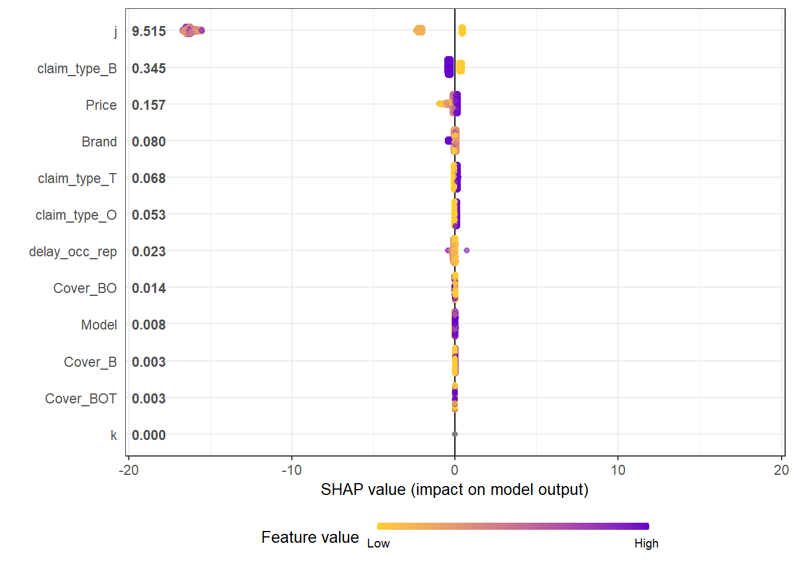
A second useful chart is the partial dependency plot. This shows how the values of a predictive a feature influence the predicted value, while holding all other values constant.
Here we show the marginal plots for the top SHAP features.
fig_list <- lapply(names(shap_values$mean_shap_score)[1:4],
shap.plot.dependence,
data_long = shap_long,
dilute = nrow(shap_long)/ 10000)
wrap_plots(fig_list, ncol = 2)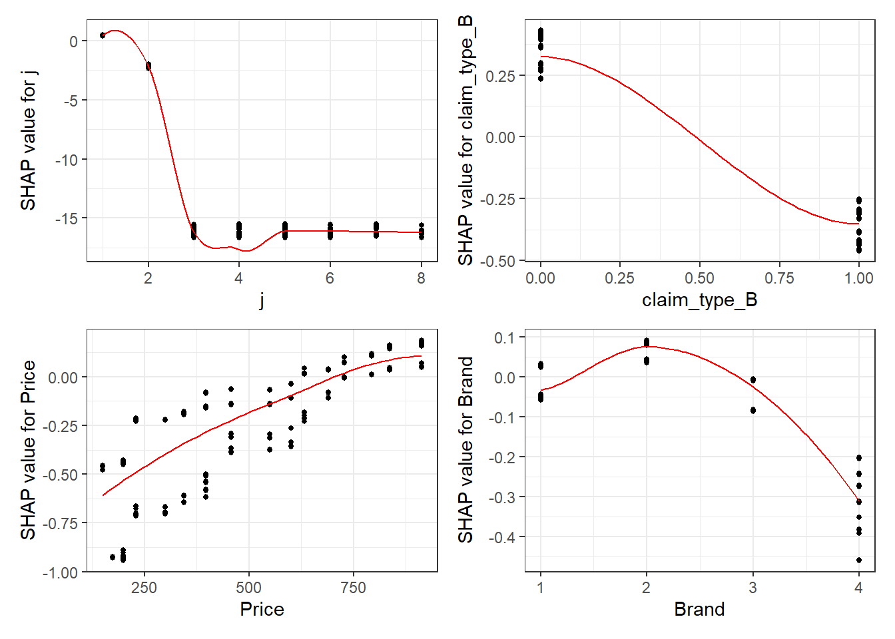
The feature importance and partial dependency plots provide quick insight into the model.
- We see that claim development period, j is the most important feature and that the RBNS reserve is smaller for larger values of j.
- The second most important feature is claimtype where breakage claims are associated with lower RBNS reserves. This is as expected from the data generating process where breakage claims come from a Beta distribution with a lower mean.
- The third most important feature is phone price where there is linear increase in RBNS reserve with increasing phone price. This is also as expected from the data generating process.
- The fourth feature is phone brand which again follows expectations from the data generating process.
SHAP values can also be used to show the components of a single prediction. In the following plot we show the top 4 components for each row of the data and zoom in at row 500.
# choose to show top 4 features by setting `top_n = 4`, set 6 clustering groups.
plot_data <- shap.prep.stack.data(shap_contrib = shap_values$shap_score,
data_percent = 10000/nrow(shap_long),
top_n = 4,
n_groups = 6)
# choose to zoom in at location 500, set y-axis limit using `y_parent_limit`
# it is also possible to set y-axis limit for zoom-in part alone using `y_zoomin_limit`
shap.plot.force_plot(plot_data, zoom_in_location = 500, y_parent_limit = c(-1,1))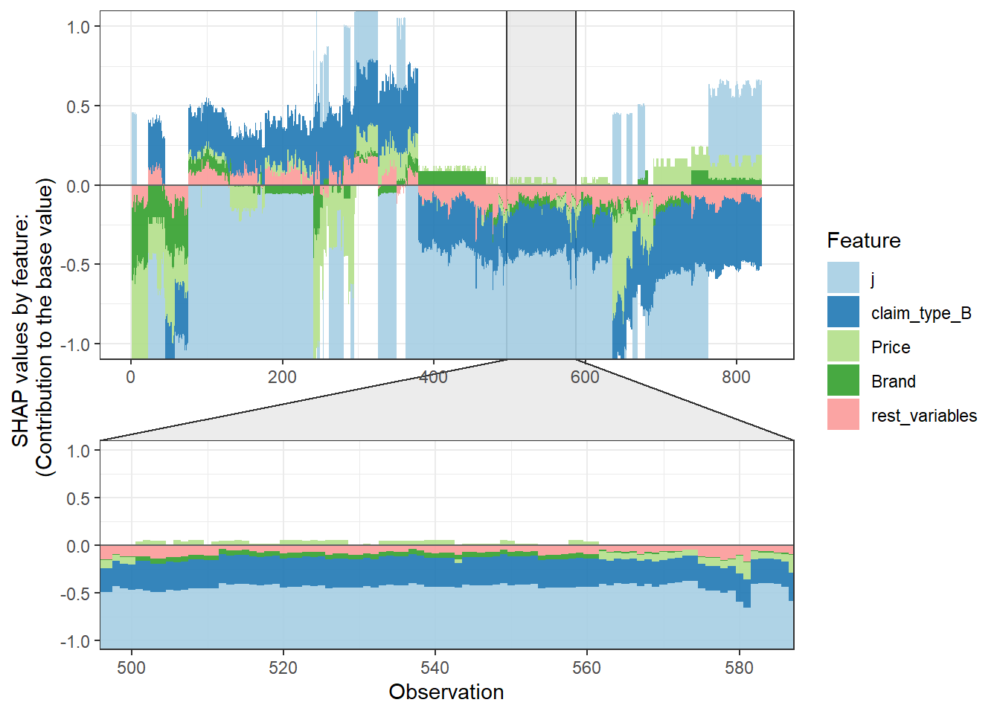
15.4.1.1.5 Summarising RBNS reserves
By comparing the model predictions to the simulated claims run-off we can get a feel for the accuracy of the machine learning approach. Below I aggregate the RBNS predictions by claim occurrence month and compare then to the known simulated claim run-off.
dt_All_RBNS [, date_occur_YYYYMM := as.character(year(date_occur) + month(date_occur)/100 )]
dt_RBNS_summary <- dt_All_RBNS[rowList_RBNS$test,.(preds = sum(preds_full), target = sum(target)), keyby = date_occur_YYYYMM]You can now jump back up to the beginning of the modeling section and select the IBNR frequency modeling tab.
15.4.1.2 IBNR Frequency model
IBNR reserves are built by multiplying the outpts of a claim frequency and claim severity model. The general process of building the model follows that of the RBNS reserves.
15.4.1.2.1 Creating xgboost dataset
Again we convert the data into a dense matrix form called a DMatrix. However before doing so we aggregate the data for efficiency of model fit times. There could be a loss of accuracy in doing, so in practice this is something you would want to experiment with.
The other point to note is the values of flgTrain used to identify the training and test rows in our dataset. Recall from Notebook 2, in the IBNR dataset training rows for the frequency model have a flgtrain value of 1 whereas the Severity training rows have a value of 2.
IBNR_predictors <- c("j",
"k",
"Cover",
"Brand",
"Model",
"Price",
"date_uw")
# aggregate the data ... does this lead to loss of variance and accuracy?
dt_All_IBNR [, date_pol_start_YYYYMM := as.character(year(date_pol_start) + month(date_pol_start)/100 )]
dt_All_IBNR_F <- dt_All_IBNR[, .(exposure = sum(exposure),
target_cost = sum(target),
target_count = sum(target>0)),
by= c(IBNR_predictors, "date_pol_start_YYYYMM", "flgTrain")]
dt_All_IBNR_F <- dt_All_IBNR_F[exposure>0]
# setup train and test rows
rowList_IBNR_F <- list(train=dt_All_IBNR_F[, which(flgTrain==1)],
test=dt_All_IBNR_F[, which(flgTrain==0)],
all = dt_All_IBNR_F[, which(flgTrain!=2)])
# setup data for xgboost
IBNR_rec <- recipe( ~ ., data = dt_All_IBNR_F[, IBNR_predictors, with = FALSE]) %>%
step_dummy(all_nominal(), one_hot = TRUE) %>%
prep()
df.IBNR_F_train <- bake(IBNR_rec, new_data = dt_All_IBNR_F[rowList_IBNR_F$train,] )
df.IBNR_F_test <- bake(IBNR_rec, new_data = dt_All_IBNR_F[rowList_IBNR_F$test,] )
df.IBNR_F_all <- bake(IBNR_rec, new_data = dt_All_IBNR_F[rowList_IBNR_F$all,] )
xgb.IBNR_F_DMat.train <- xgb.DMatrix(data = as.matrix(df.IBNR_F_train),
weight = dt_All_IBNR_F[rowList_IBNR_F$train, exposure],
label = dt_All_IBNR_F[rowList_IBNR_F$train, target_count])
xgb.IBNR_F_DMat.test <- xgb.DMatrix(data = as.matrix(df.IBNR_F_test),
weight = dt_All_IBNR_F[rowList_IBNR_F$test, exposure],
label = dt_All_IBNR_F[rowList_IBNR_F$test, target_count])
xgb.IBNR_F_DMat.all <- xgb.DMatrix(data = as.matrix(df.IBNR_F_all),
weight = dt_All_IBNR_F[rowList_IBNR_F$all, exposure],
label = dt_All_IBNR_F[rowList_IBNR_F$all, target_count])15.4.1.2.2 Fit initial model using cross validation
Having prepared the data for xgboost we now need to select xgboost hyperparameter and fit an initial model.
I have used the count:poisson objective function based upon inspection of the target variable.
hist(dt_All_IBNR_F[rowList_IBNR_F$train, target_count])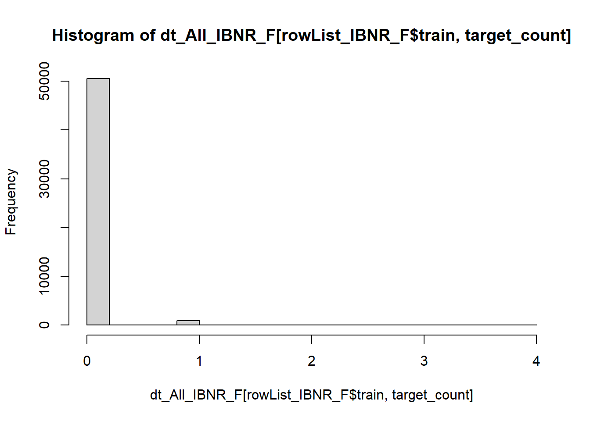
param <- list(
objective = "count:poisson",
max_depth = 2L, # tree-depth
subsample = 0.7, # randomly sample rows before fitting each tree
colsample_bytree = 0.8, # randomly sample columns before fitting each tree
min.child.weight = 10, # minimum weight per leaf
eta = 0.1 # Learning rate
#monotone_constraints = monotone_Vec # Monotonicity constraints
)
# Train model with cross validation
set.seed(1984) # for repeatability
xgb_IBNR_F_CV <- xgb.cv(
params = param,
data = xgb.IBNR_F_DMat.train,
nrounds = 2000, # Maximum number of trees to build
nfold = 5,
early_stopping_rounds = 50L, # Stops algorithm early if performance has not improved in n rounds
print_every_n = 50L, # How often to print to console
#base_score = 0.001, # Model starting point
prediction = TRUE # Keeps the predictions
)[1] train-poisson-nloglik:0.509649+0.000442 test-poisson-nloglik:0.509662+0.001670
Multiple eval metrics are present. Will use test_poisson_nloglik for early stopping.
Will train until test_poisson_nloglik hasn't improved in 50 rounds.
[51] train-poisson-nloglik:0.162211+0.002027 test-poisson-nloglik:0.162435+0.005655
[101] train-poisson-nloglik:0.136555+0.002231 test-poisson-nloglik:0.137046+0.007991
[151] train-poisson-nloglik:0.132412+0.002202 test-poisson-nloglik:0.133890+0.008357
[201] train-poisson-nloglik:0.130635+0.002154 test-poisson-nloglik:0.133224+0.008607
[251] train-poisson-nloglik:0.129481+0.002143 test-poisson-nloglik:0.132928+0.008833
[301] train-poisson-nloglik:0.128445+0.002096 test-poisson-nloglik:0.132870+0.008822
[351] train-poisson-nloglik:0.127596+0.002078 test-poisson-nloglik:0.132839+0.008840
[401] train-poisson-nloglik:0.126853+0.002010 test-poisson-nloglik:0.132943+0.008736
Stopping. Best iteration:
[354] train-poisson-nloglik:0.127535+0.002085 test-poisson-nloglik:0.132833+0.008836Having fit the model we store the out-of-fold predictions for both the claim frequency and the claim counts.
dt_All_IBNR_F[rowList_IBNR_F$train, preds_oof_IBNR_F := xgb_IBNR_F_CV$pred]
dt_All_IBNR_F[rowList_IBNR_F$train, preds_oof_IBNR_Nos := exposure * preds_oof_IBNR_F]15.4.1.2.3 Fit final model on all training data
Having fit the model using 5 fold cross validation we observe the optimum number of fitting rounds to be 354.
We can then us this to train a final model on all the data.
xgb_IBNR_F_Fit <- xgb.train(
params = param,
data = xgb.IBNR_F_DMat.train,
nrounds = xgb_IBNR_F_CV$best_iteration,
# base_score = 1,
watchlist = list(train=xgb.IBNR_F_DMat.train, test=xgb.IBNR_F_DMat.test) ,
print_every_n = 50
)[1] train-poisson-nloglik:0.509641 test-poisson-nloglik:0.497402
[51] train-poisson-nloglik:0.162953 test-poisson-nloglik:0.121425
[101] train-poisson-nloglik:0.136572 test-poisson-nloglik:0.087977
[151] train-poisson-nloglik:0.132644 test-poisson-nloglik:0.084498
[201] train-poisson-nloglik:0.130981 test-poisson-nloglik:0.083343
[251] train-poisson-nloglik:0.129897 test-poisson-nloglik:0.082925
[301] train-poisson-nloglik:0.129155 test-poisson-nloglik:0.082865
[351] train-poisson-nloglik:0.128418 test-poisson-nloglik:0.083072
[354] train-poisson-nloglik:0.128371 test-poisson-nloglik:0.083107 dt_All_IBNR_F[rowList_IBNR_F$all, preds_full_IBNR_Nos := predict(xgb_IBNR_F_Fit,xgb.IBNR_F_DMat.all)]15.4.1.2.4 Inspect model fit
Having fitted the full model we can then inspect the model fit. The traditional way of inspecting global model feature importance is to use gain.
#default feature importance by gain
featImp_IBNR_F <- xgb.importance(xgb_IBNR_F_Fit, feature_names = colnames(xgb.IBNR_F_DMat.train))
xgb.plot.importance(featImp_IBNR_F, main="Feature Importance - IBNR Frequency")
An increasingly popular and more robust approach is to use SHAP values https://github.com/slundberg/shap. The SHAP equivalent of the feature importance chart is shown below.
# Return the SHAP values and ranked features by mean|SHAP|
shap_values <- shap.values(xgb_model = xgb_IBNR_F_Fit, X_train = as.matrix(df.IBNR_F_train))
# Prepare the long-format data:
shap_long <- shap.prep(shap_contrib = shap_values$shap_score, X_train = as.matrix(df.IBNR_F_train))
# **SHAP summary plot**
shap.plot.summary(shap_long, dilute = nrow(df.IBNR_F_train)/10000)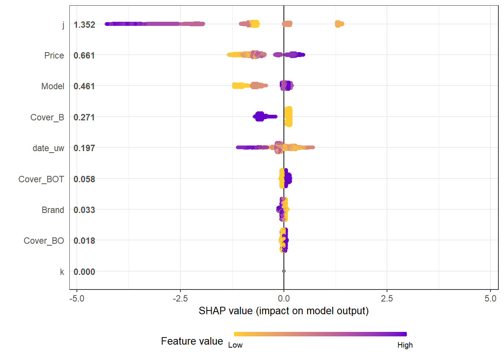
A second useful chart is the partial dependency plot. This shows how the values of a predictive a feature influence the predicted value, while holding all other values constant.
Here we show the SHAP equivalent of partial dependency plots; marginal plots for the top SHAP features.
fig_list <- lapply(names(shap_values$mean_shap_score)[1:4],
shap.plot.dependence,
data_long = shap_long,
dilute = nrow(shap_long)/ 10000)
wrap_plots(fig_list, ncol = 2)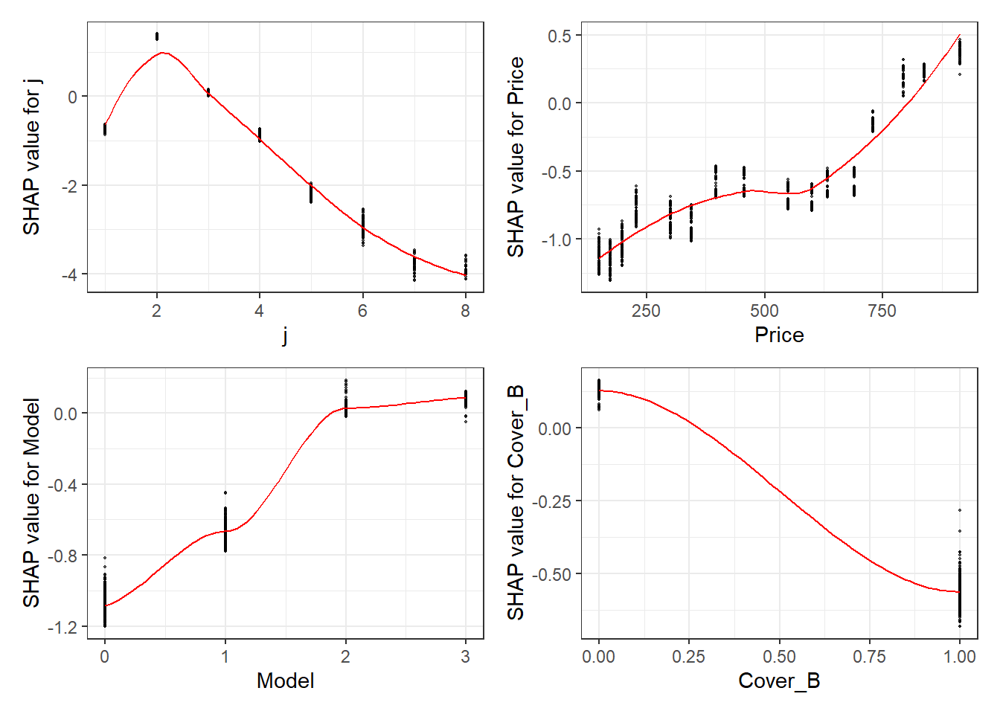
The feature importance and partial dependency plots provide quick insight into the model.
- We see that claim development period, j is the most important feature and that the IBNR frequency is smaller for larger values of j.
- The second most important feature is phone price with the IBNR claim count increasing as price increases. Although this is not a direct feature in the data generating process there is a link with higher theft frequencies and higher phone prices.
- The third most important feature is phone model with IBNR frequency increasing with model type. This is expected from the data generating process as theft claim frequency increases with model type.
- The fourth feature is phone cover and it should be no suprise to see that Breakage only, the most basic cover level is associated with lower IBNR claim counts.
SHAP values can also be used to show the components of a single predction. In the following plot we show the top 4 components for each row of the data and zoom in at row 500.
# choose to show top 4 features by setting `top_n = 4`, set 6 clustering groups.
plot_data <- shap.prep.stack.data(shap_contrib = shap_values$shap_score,
data_percent = 10000/nrow(shap_long),
top_n = 4,
n_groups = 6)
# choose to zoom in at location 500, set y-axis limit using `y_parent_limit`
# it is also possible to set y-axis limit for zoom-in part alone using `y_zoomin_limit`
shap.plot.force_plot(plot_data, zoom_in_location = 500, y_parent_limit = c(-1,1))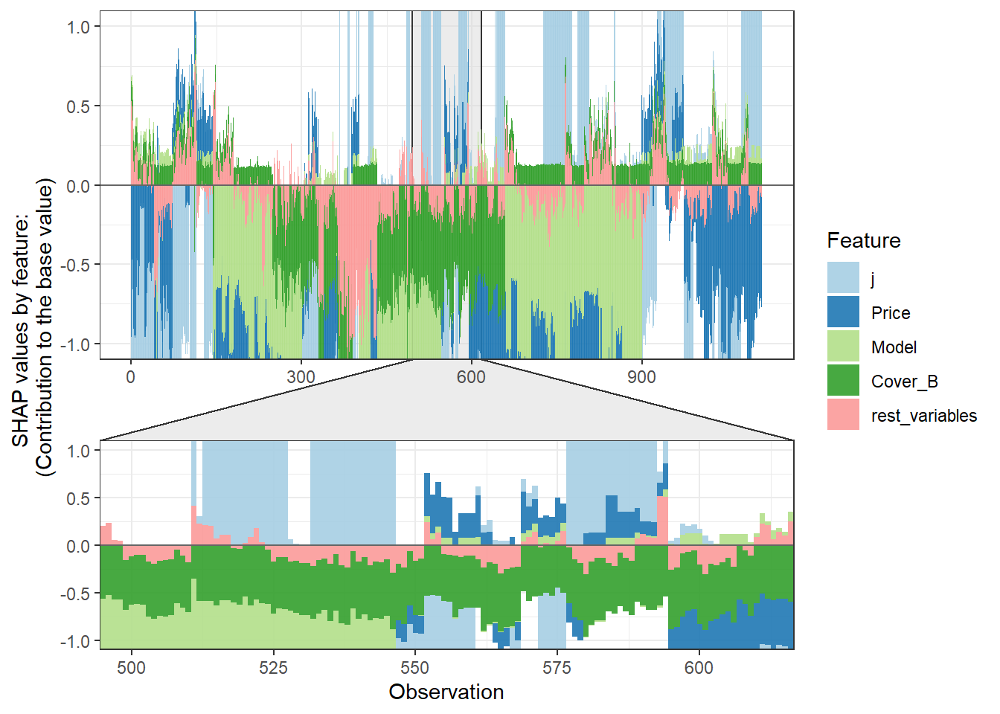
15.4.1.2.5 Summarising IBNR claim counts
Again we convert the data into a dense matrix form called a DMatrix. However before doing so we aggregate the data for efficient of model fit times. There could be a loss of accuracy in doing, so in practice this is something you’d want to experiment with.
dt_All_IBNR_F_summary <- dt_All_IBNR_F[rowList_IBNR_F$test,.(preds = sum(preds_full_IBNR_Nos), target = sum(target_count)), keyby = date_pol_start_YYYYMM]You can now jump back up to the beginning of the modeling section and select the IBNR severity modeling tab.
15.4.1.3 IBNR Severity model
IBNR reserves are built by multiplying the outputs of a claim frequency and claim severity model. The general process of building the model follows that of the RBNS reserves.
15.4.1.3.1 Creating xgboost dataset
Again we convert the data into a dense matrix form called a DMatrix.
The other point to note is the values of flgTrain used to identify the training and test rows in our dataset. Recall from Notebook 2, in the IBNR dataset training rows for the frequency model have a flgtrain value of 1 whereas the Severity training roes have a value of 2.
IBNR_predictors <- c("j",
"k",
"Cover",
"Brand",
"Model",
"Price",
"date_uw")
dt_All_IBNR [, date_pol_start_YYYYMM := as.character(year(date_pol_start) + month(date_pol_start)/100 )]
dt_All_IBNR_S <- dt_All_IBNR[, .(exposure = sum(target>0),
target_cost = sum(target)),
by= c(IBNR_predictors, "date_pol_start_YYYYMM", "flgTrain")]
dt_All_IBNR_S <- dt_All_IBNR_S[exposure>0]
# setup train and test rows
rowList_IBNR_S <- list(train=dt_All_IBNR_S[, which(flgTrain==2)],
test=dt_All_IBNR_S[, which(flgTrain==0)],
all = dt_All_IBNR_S[, which(flgTrain!=1)])
# setup data for xgboost
IBNR_rec <- recipe( ~ ., data = dt_All_IBNR_S[, IBNR_predictors, with = FALSE]) %>%
step_dummy(all_nominal(), one_hot = TRUE) %>%
prep()
df.IBNR_S_train <- bake(IBNR_rec, new_data = dt_All_IBNR_S[rowList_IBNR_S$train,] )
df.IBNR_S_test <- bake(IBNR_rec, new_data = dt_All_IBNR_S[rowList_IBNR_S$test,] )
df.IBNR_S_all <- bake(IBNR_rec, new_data = dt_All_IBNR_S[rowList_IBNR_S$all,] )
xgb.IBNR_S_DMat.train <- xgb.DMatrix(data = as.matrix(df.IBNR_S_train),
weight = dt_All_IBNR_S[rowList_IBNR_S$train, exposure],
label = dt_All_IBNR_S[rowList_IBNR_S$train, target_cost])
xgb.IBNR_S_DMat.test <- xgb.DMatrix(data = as.matrix(df.IBNR_S_test),
weight = dt_All_IBNR_S[rowList_IBNR_S$test, exposure],
label = dt_All_IBNR_S[rowList_IBNR_S$test, target_cost])
xgb.IBNR_S_DMat.all <- xgb.DMatrix(data = as.matrix(df.IBNR_S_all),
weight = dt_All_IBNR_S[rowList_IBNR_S$all, exposure],
label = dt_All_IBNR_S[rowList_IBNR_S$all, target_cost])15.4.1.3.2 Fit initial model using cross validation
Having prepared the data for xgboost.
I have used the reg:gamma objective function based upon inspection of the target variable.
Min. 1st Qu. Median Mean 3rd Qu. Max.
3.0 125.5 255.0 353.9 486.5 2011.0 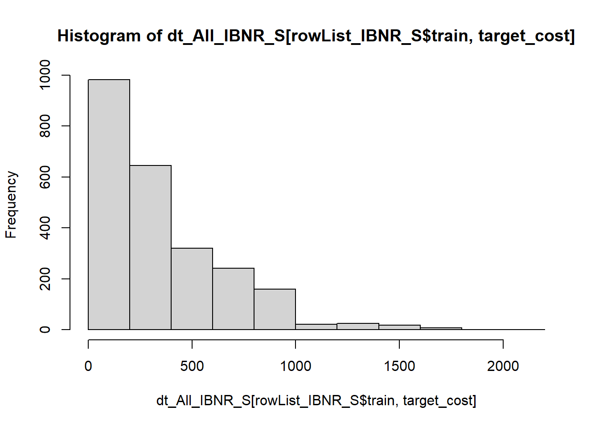
param <- list(
objective = "reg:gamma",
max_depth = 2L, # tree-depth
subsample = 0.7, # randomly sample rows before fitting each tree
colsample_bytree = 0.8, # randomly sample columns before fitting each tree
min.child.weight = 10, # minimum weight per leaf
eta = 0.1 # Learning rate
#monotone_constraints = monotone_Vec # Monotonicity constraints
)
# Train model with cross validation
set.seed(1984) # for repeatability
xgb_IBNR_S_CV <- xgb.cv(
params = param,
data = xgb.IBNR_S_DMat.train,
nrounds = 2000, # Maximum number of trees to build
nfold = 5,
early_stopping_rounds = 50L, # Stops algorithm early if performance has not improved in n rounds
print_every_n = 50L, # How often to print to console
#base_score = 0.001, # Model starting point
prediction = TRUE # Keeps the predictions
)[1] train-gamma-nloglik:725.773272+11.678322 test-gamma-nloglik:724.944332+48.085563
Multiple eval metrics are present. Will use test_gamma_nloglik for early stopping.
Will train until test_gamma_nloglik hasn't improved in 50 rounds.
[51] train-gamma-nloglik:10.028548+0.083001 test-gamma-nloglik:10.030530+0.394205
[101] train-gamma-nloglik:6.820625+0.017219 test-gamma-nloglik:6.827891+0.071678
[151] train-gamma-nloglik:6.810464+0.017320 test-gamma-nloglik:6.825314+0.071134
[201] train-gamma-nloglik:6.805024+0.017430 test-gamma-nloglik:6.825313+0.071630
Stopping. Best iteration:
[160] train-gamma-nloglik:6.809337+0.017458 test-gamma-nloglik:6.825086+0.071190Having fitted an initial model the out-of-fold predictions are stored.
dt_All_IBNR_S[rowList_IBNR_S$train, preds_oof_IBNR_S := xgb_IBNR_S_CV$pred]
dt_All_IBNR_S[rowList_IBNR_S$train, preds_oof_IBNR_Cost := exposure * preds_oof_IBNR_S]15.4.1.3.3 Fit final model on all training data
Having fit the model using 5 fold cross validation we observe the optimum number of fitting rounds to be 160.
We can then us this to train a final model on all the data.
xgb_IBNR_S_Fit <- xgb.train(
params = param,
data = xgb.IBNR_S_DMat.train,
nrounds = xgb_IBNR_S_CV$best_iteration,
# base_score = 1,
watchlist = list(train=xgb.IBNR_F_DMat.train, test=xgb.IBNR_F_DMat.test) ,
print_every_n = 50
)[1] train-gamma-nloglik:-0.520863 test-gamma-nloglik:-0.546764
[51] train-gamma-nloglik:4.166608 test-gamma-nloglik:4.165618
[101] train-gamma-nloglik:5.650526 test-gamma-nloglik:5.655644
[151] train-gamma-nloglik:5.630720 test-gamma-nloglik:5.607739
[160] train-gamma-nloglik:5.627124 test-gamma-nloglik:5.601972 Having trained the model the predictions are stored.
dt_All_IBNR_S[rowList_IBNR_S$all, preds_full_IBNR_Cost := predict(xgb_IBNR_S_Fit,xgb.IBNR_S_DMat.all)]15.4.1.3.4 Inspect model fit
Having fitted the full model we can then inspect the model fit. The traditional way of inspecting global model feature importance is to use the gains chart.
#default feature importance by gain
featImp_IBNR_S <- xgb.importance(xgb_IBNR_S_Fit, feature_names = colnames(xgb.IBNR_S_DMat.train))
xgb.plot.importance(featImp_IBNR_S, main="Feature Importance - IBNR Severity")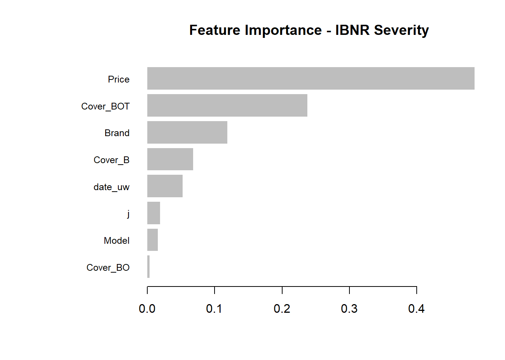
An increasingly popular and more robust approach is to use SHAP values https://github.com/slundberg/shap. The SHAP equivalent of the feature importance chart is shown below.
# Return the SHAP values and ranked features by mean|SHAP|
shap_values <- shap.values(xgb_model = xgb_IBNR_S_Fit, X_train = as.matrix(df.IBNR_S_train))
# Prepare the long-format data:
shap_long <- shap.prep(shap_contrib = shap_values$shap_score, X_train = as.matrix(df.IBNR_S_train))
# **SHAP summary plot**
shap.plot.summary(shap_long, dilute = max(nrow(df.IBNR_S_train),10000)/10000)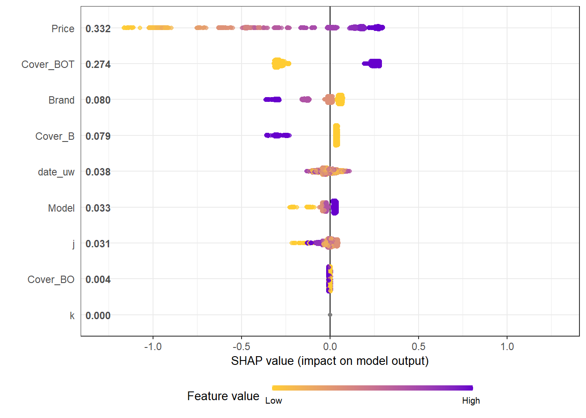
A second useful chart is the partial dependency plot. This shows how the values of a predictive a feature influence the predicted value, while holding all other values constant.
Here we show the SHAP equivalent of partial dependency plots; marginal plots for the top SHAP features.
fig_list <- lapply(names(shap_values$mean_shap_score)[1:4],
shap.plot.dependence,
data_long = shap_long,
dilute = nrow(shap_long)/ 10000)
wrap_plots(fig_list, ncol = 2)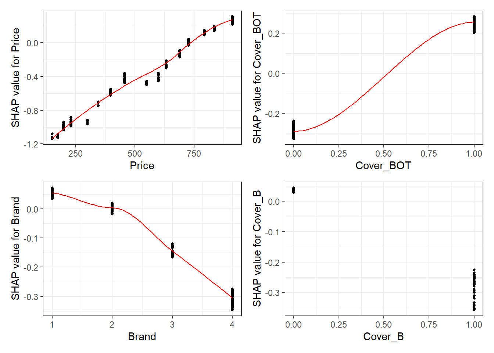
The feature importance and partial dependency plots provide quick insight into the model.
- We see that phone price is the most important feature and has a linear relationship with IBNR severity as we would expect from the data generating process.
- The second and third most important features relate to phone cover. We see that cover BOT is associated with higher IBNR costs whereas cover B is associated with lower.
- The fourth feature is phone brand and follows the pattern we would expect from the data simulation process.
SHAP values can also be used to show the components of a single prediction. In the following plot we show the top 4 components for each row of the data and zoom in at row 500.
# choose to show top 4 features by setting `top_n = 4`, set 6 clustering groups.
plot_data <- shap.prep.stack.data(shap_contrib = shap_values$shap_score,
data_percent = 10000/max(nrow(shap_long),10000),
top_n = 4,
n_groups = 6)The SHAP values of the Rest 5 features were summed into variable 'rest_variables'.# choose to zoom in at location 500, set y-axis limit using `y_parent_limit`
# it is also possible to set y-axis limit for zoom-in part alone using `y_zoomin_limit`
shap.plot.force_plot(plot_data, zoom_in_location = 500, y_parent_limit = c(-1,1))Data has N = 1111 | zoom in length is 111 at location 500.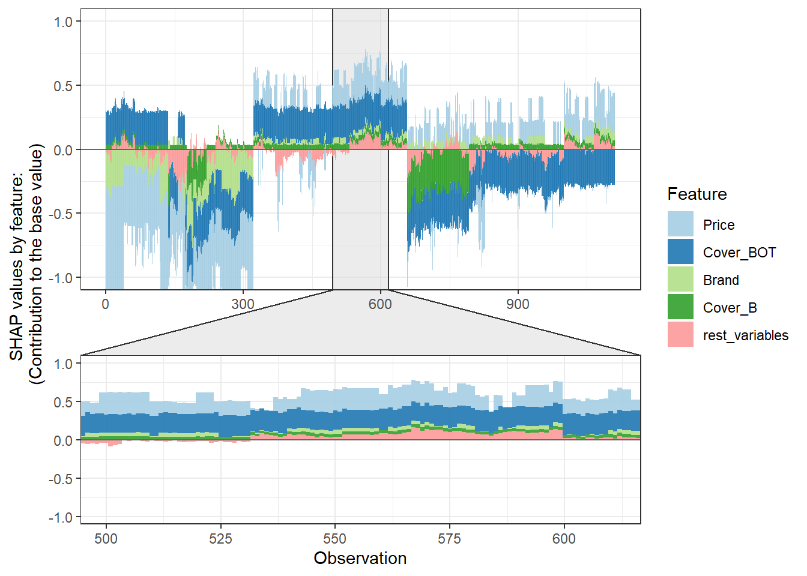
15.4.1.3.5 Summarising IBNR claim costs
Again we convert the data into a dense matrix form called a DMatrix. However before doing so we aggregate the data for efficient of model fit times. There could be a loss of accuracy in doing, so in practice this is something you’d want to experiment with.
dt_All_IBNR_S_summary <- dt_All_IBNR_S[rowList_IBNR_S$test,.(preds = sum(preds_full_IBNR_Cost), target = sum(target_cost)), keyby = date_pol_start_YYYYMM]15.4.2 Summary
In this section we have stepped through the process to apply machine learning techniques in order to create reserve estimates following the techniques set out in sections 3 and 4 of Baudry’s paper.
Specifically we have shown how to apply the xgboost machine learning algorithm and illustrated how it can, with little human input, create reasonable reserve estimates as shown below.
In addition we have seen how we can create explanations for the reserve predictions using feature importance and partial dependence plots. We have also used SHAP values which can be used to explain both global features and individual predictions.